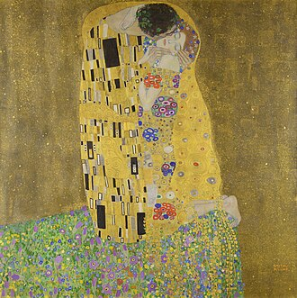

Detalles De Las Obras

La joven de la perla
La joven de la perla o Muchacha con turbante es una de las obras maestras del pintor neerlandés Johannes Vermeer, realizada entre 1665 y 1667. Como el nombre indica, utiliza un pendiente de perla como punto focal. La pintura se encuentra actualmente en el museo Mauritshuis de La Haya.

Retrato de Adele Bloch-Bauer I
El Retrato de Adele Bloch-Bauer I, también conocida como La dama dorada o La dama de oro (en inglés: The woman in gold), es una pintura de Gustav Klimt completada en 1907. De acuerdo con informes periodísticos, fue vendida en 135 millones de dólares a Ronald Lauder, propietario de la Neue Galerie en Nueva York, en junio de 2006, lo que lo convirtió en ese momento en la segunda pintura de mayor valor de todo el mundo. La obra se exhibe en la mencionada galería desde julio de 2006.

Las dos Fridas
Las dos Fridas es un cuadro al óleo de Frida Kahlo pintado en 1939. Esta obra constituye un autorretrato doble de la artista en la cual se duplica su imagen a manera de espejo, y tomada de la mano, pero con diferente vestimenta. Ambas figuras se encuentran sentadas sobre un banco forrado de verde y en el fondo se observa un cielo grisáceo. De acuerdo a Seeman (2004) es su cuadro más famoso.

El beso
Esta obra, que sigue los cánones del Simbolismo, es una tela con decoraciones y mosaicos sobre un fondo dorado. Está expuesta en la Österreichische Galerie Belvedere de Viena. Normalmente las obras de Klimt creaban escándalos y eran criticadas como "pornografía" y por ser "excesivamente pervertidas". Las obras pusieron a Klimt como un "enfant terrible" por sus opiniones antiautoritarias y antipopulistas sobre el arte. Él escribió: "Si no se puede complacer a todo el mundo con sus obras y su arte, por favor complace a unos pocos". Por el contrario, El beso fue recibida con entusiasmo, y de inmediato no encontró un comprador.